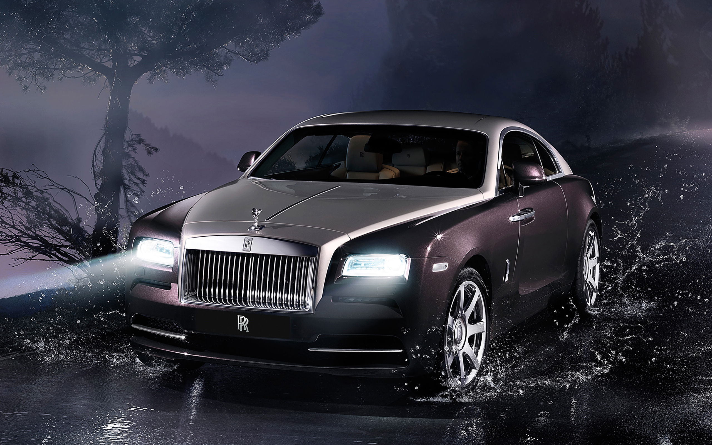
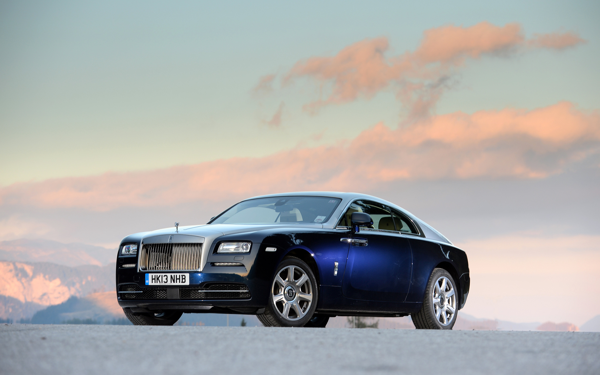

ZARİF VE İHTİAMLI tasarım
Rolls-Royce Wraith, İngiliz lüksünün ve güç anlayışının zirvesini temsil ediyor. İki kapılı gran turismo yapısı, Pantheon ızgarası ve ters açılan Coach Doors'u ile her yerde baş döndüren bir silüete sahip.
- ✓ Midnight Sapphire Özel Boya Rengi
- ✓ 21 inç Forged Özel tasarım Jantlar
- ✓ Spirit of Ecstasy Özel Figürü ve LED Halo Farlar

KRALİYET KONFORU
Wraith'inç kabini, dünyada erişilebilen en lüks otomobil iç mekanlarından birini sunuyor. El yapımı Canadel Panelling ahşap kaplama, Bespoke Starlight Headliner yıldızlı tavan ve muhteşem deri işçiliği sınırsız bir ayrıcalık hissi yaratıyor.
- ✓ Seashell / Navy Bespoke Deri koltuklar
- ✓ 1.340 Fiber Optik Yıldızlı Tavan
- ✓ Rolls-Royce Bespoke Audio 18 Hoparlör Sistemi
TEKNİK MÜHENDİSLİK
0-100 KM/H4.6sn
GÜÇ632hp
MAKSİMUM TORK820nm
MOTOR HACMİ6.592cc
MAKSİMUM HIZ250km/h
BOŞ AĞIRLIK2.360kg
ŞANZIMANZF Otomatik8-ileri
ÇEKİŞ SİSTEMİRWDarkadan itiş
SİLİNDİR12V12 twin-turbo